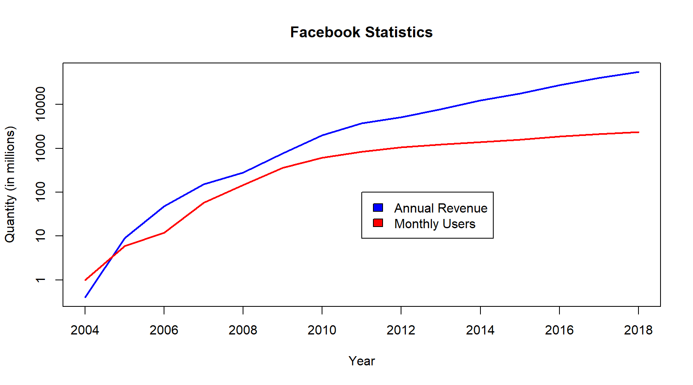

1.5 Online Commerce
In 2019, it is estimated that over 56% of the world’s population has access to the internet. There are 26.6 billion devices and 4.39 billion people are connected to the internet. It is estimated that 3.48 billion social media users. Facebook alone has well over 2.36 billion users each month. Google answers 63,000 searches per second. This is creating unprecented levels of opportunity for marketing to huge markets world-wide. In the following graph, the number of users grows linearly while their revenues grow expotentally. (Statista 2019)

The mobile phone market Review the statistics of the performance of leading mobile phone producers since 1994 [TNW2019] and discuss the following:
- What factors contributed to the fall of market leaders?
- How will President Trump’s technology embargo on China effect this market?
- Is there room for new competitors in this market?
1.5.1 Growth of the Internet and e-commerce
As the following graph shows, the types of devices used to access the internet have also changed in the past decade.

The trend has been to using mobile devices for shopping, and surfing for possibilities. There appears to be some resistance to using mobile devices to order online.
| Computer | Tablet | Smartphone | |
|---|---|---|---|
| E-commerce traffic | 53.9% | 12.4% | 33.7% |
| Volume of Retail sales | 76.9% | 12.4% | 10.7% |
With the development of the world wide web in the 1990s, online commerce has been gaining advantage over corresponding brick and mortar firms, especially for the following reasons:
- The customer has access to more information to make better purchasing decisions
- The customer can shop 24x7
- The customer can track the progress of order fulfillment.
- Customers can find and provide feedback verified through social media.
- The functions of e-commerce can be purchased and updated to keep development costs low and to maximize economies of scale
However, the elderly are more resistant to adopt online shopping, but there is growing acceptance.
Adoption of online shopping by age of internet user
| Frequency | 18-29 | 30-39 | 40-49 | 50-64 | >65 |
|---|---|---|---|---|---|
| Once per week | 35% | 37% | 23% | 17% | 11% |
| Once per month | 41% | 35% | 35% | 38% | 31% |
| Once per year | 24% | 28% | 42% | 45% | 50% |
| Never | 0% | 0% | 0% | 0% | 8% |

Business Functions of E-Commerce
1.5.2 The e-shopping customer experience
As shown by the table below, The process of shopping for goods online has many similarities to shopping at traditional brick and mortar shops. These similarities have contributed to rapid growth in online purchases which in 2018 totaled $2,489 trillion worldwide. This represents about 8.8% of all sales worldwide. (Saleh 2019)
| Stage | Brick and Mortar | Electronic world |
|---|---|---|
| Customer finds the store. | Ads and billboards | Google and Facebook Ads; Referrals from blogs |
| Customer shops for items of interest | Window shopping | Search the website |
| Customer searches for information on the products | Check packaging and sales staff | Internet searches and social media recommendations |
| Customer chooses items for purchase | Places them in a cart or shopping basket | Virtual transfer of items to an electronic shopping cart |
| Customer checkouts the selected items for purchase | The customer takes the shopping cart to the check out counter | The virtual cart is checked out creating a preliminary bill complete with shipping information |
| The financial institution identifies and authenticates the payer | The customer swipes a credit card or ATM card | The customer logs into to e-banking, e-payment or credit card services |
| The customer transfers funds to the vendor. | The customer signs the electronic receipt or pays cash | The customer verifies and authorizes payment |
| The financial institution send payment verification. | ATM or Credit card service authenticates the transaction or the cashier | The financial institution sends a secure memo to the e-store that payment was made. |
| The vendor sends a pick-list order to the fulfillment center. | The storekeeper faxes the order to the warehouse | The fulfillment center is notified of the order and its payment and picks the items |
| The fulfillment center sends the goods to the shipper. | The items are boxed and set aside for pickup | The items are boxed and sent to the shipper. |
| The fulfillment center updates the order status. | The customer is called to pick up his order. | The online system is updated and the customer can track its location. |
| The shipper delivers the goods. | The counter staff check the delivery items and turns them over to the customer. | The shipper delivers the goods. |
| The customer takes possession of the goods. | The customer picks up the bags and leaves | The customer signs for the goods and the tracking system is updated. |
1.5.2 Hybrid businesses
Online shopping giant Amazon has recently merged with Target a traditional department store chain. Explain why this merger is a good idea and what benefits the customer gains from it.
References
Saleh, Khalid. 2019. “Global Online Retail Spending: Statistics and Trends.” https://www.invespcro.com/blog/global-online-retail-spending-statistics-and-trends/; Invesp.
Statista. 2019. “Number of Internet Users Worldwide 2005-2018.” https://www.statista.com/statistics/273018/number-of-internet-users-worldwide.